M0 · 시작하기
말 세 마디로 쌓이는 성장 기록
"시작했어", "메모", "끝났어"만 말하면 Planner와 SharePoint에 기록이 쌓이고, 연말에 근거가 붙은 돌아보기를 받는 Teams 에이전트를 직접 만듭니다. 내가 만들어 나만 쓰는 개인 매니징 에이전트이고, 만드는 과정에서 Copilot Studio의 표준 구성 요소를 한 번씩 모두 다뤄 봅니다.
이 실습에서 다루는 Copilot Studio 기능
| 기능 | 어디서 | 무엇을 익히나 |
|---|---|---|
| 생성형 오케스트레이션 | M4, M8 | 지침만으로 도구와 토픽을 골라 부르게 하기 |
| 에이전트 흐름 (도구) | M5, M6 | 트리거 입력·출력 설계, 동적 채우기, 입력 설명 |
| 토픽 | M7 | 질문 노드, 다중 선택 버튼, 토픽 입력·출력 |
| 지침 | M8 | "/"로 도구·토픽 참조, 되묻기 막기 |
| 환경 변수와 솔루션 | M3 | 값을 한 곳에 두고 식에서 parameters()로 부르기 |
| 흐름 식 | M5, M6, M10 | 칩·글자·식 구분, 동작 이름, 반복 적용 |
| 예약 흐름과 선제 메시지 | M10 | 되풀이 트리거, 에이전트 이름으로 Teams에 먼저 말 걸기 |
| Teams 채널 게시 | M9 | 나만 쓰는 에이전트로 게시하기 |
완성하면 이렇게 동작해요
구성
| 구성 요소 | 역할 |
|---|---|
| Copilot Studio 에이전트 | 대화, 판단. 지침 + 토픽 1개 + 도구 7개 |
| Planner 개인 플랜 | 대기·진행 중인 일 (버킷: 할 일, 목표) |
| SharePoint 리스트 | 완료 기록만. 모든 보고서의 근거 |
| 예약 흐름 3개 | 금요일 미룬 회고 알림, 월간·분기 알림 |
준비물
- Copilot Studio와 Power Automate를 쓸 수 있는 Microsoft 365 계정
- 내가 편집할 수 있는 SharePoint 사이트
- Planner, Teams
- Power Platform 환경에서 솔루션을 만들 권한
이 사이트의 표기법
흐름을 만들 때 가장 많이 틀리는 곳이 "칩으로 넣을지, 글자로 칠지"입니다. 모든 칸에 아래 표기를 씁니다.
식식: 칸 오른쪽 fx 탭에 붙여 넣는 값. 회색 코드 상자의 복사 버튼을 쓰세요.
'가 ‘ ’로 바뀌어 "식이 잘못되었습니다" 오류가 납니다. 이 사이트의 복사 버튼을 쓰면 안전합니다.진행 방법
- 모듈 순서대로 진행합니다. 뒤 모듈이 앞 모듈의 리스트, 환경 변수, 도구를 씁니다.
- 끝낸 단계는 체크합니다. 체크 상태는 이 브라우저에만 저장됩니다.
- 막히면 M12 문제 해결부터 봅니다. 개발 중 실제로 겪은 오류와 해결법을 모아 두었습니다.
M1 · 데이터 준비
완료 기록을 담을 리스트 만들기
끝난 일만 들어가는 리스트입니다. 열 이름은 모두 영문으로 만듭니다. 한글 열 이름은 내부 이름이 _xb0a0_…처럼 깨져 필터 쿼리에서 오류가 납니다.
- SharePoint 사이트에서 새 목록을 만듭니다. 이름: GrowthJournal
- 아래 표대로 열을 추가합니다. Title은 기본 열을 그대로 씁니다.
- SourceId 열에 인덱스를 겁니다. 목록 설정 → 인덱싱된 열 → 새 인덱스 만들기 → SourceId. 중복 확인 필터가 빨라집니다.
- 사이트 주소와 목록 이름을 메모해 둡니다. M3에서 환경 변수에 넣습니다.
| 열 | 형식 | 설정 | 담는 내용 |
|---|---|---|---|
| Title | 한 줄 텍스트 | 기본 | 일 제목 |
| WorkDate | 날짜 | 날짜만 | 완료일 |
| StartDate | 날짜 | 날짜만 | 시작일 (카드 생성일) |
| Category | 선택 | 업무, 프로젝트, 학습, 자격증, 멘토링, 목표, 기타 | 종류 |
| Content | 여러 줄 텍스트 | 일반 텍스트 | 한 일 요약 |
| Learned | 여러 줄 텍스트 | 일반 텍스트 | 회고 정리 |
| Skills | 한 줄 텍스트 | 기술·도구, 쉼표 구분 | |
| Project | 한 줄 텍스트 | 고객사·프로젝트 | |
| Outcome | 여러 줄 텍스트 | 사용자가 적은 결과 | |
| Goal | 한 줄 텍스트 | 관련 목표 카드 제목 | |
| Role | 한 줄 텍스트 | 역할 | |
| Source | 선택 | Planner, 한마디 | 기록 출처 |
| SourceId | 한 줄 텍스트 | 인덱스 | Planner TaskId (중복 방지) |
| ReviewStatus | 선택 | 미룸, 완료, 건너뜀 | 회고 상태 |
| AskCount | 숫자 | 기본값 0 | 금요일에 물은 횟수 |
M2 · 데이터 준비
진행 중인 일을 둘 Planner 플랜
진행 중인 일과 목표만 둡니다. 완료는 에이전트가 처리하고, 끝난 일은 리스트로 옮겨 갑니다.
- Planner에서 개인 플랜을 만듭니다. 이름 예: Growth Journal
- 버킷을 두 개 만듭니다. 할 일, 목표
- 플랜 ID를 메모합니다. 플랜을 열었을 때 주소창의
/plan/뒤 문자열입니다. - 버킷 ID 두 개를 확인합니다. 임시 흐름을 하나 만들어 Planner 버킷 나열 동작에 플랜 ID를 사용자 지정 값으로 넣고 실행하면 출력에 버킷별 id가 나옵니다. 확인 후 임시 흐름은 지웁니다.
| 진행률 값 | 뜻 |
|---|---|
| 0 | 시작 안 함 |
| 50 | 진행 중 |
| 100 | 완료 |
Planner 커넥터에는 별도의 "상태" 속성이 없습니다. 진행률 숫자로 상태를 표현합니다.
M3 · 데이터 준비
솔루션과 환경 변수 5개
사이트 주소와 ID를 흐름마다 적지 않고 환경 변수 한 곳에 둡니다. 흐름 10개가 같은 값을 쓰므로, 값이 바뀌어도 한 곳만 고치면 됩니다.
- Power Apps(make.powerapps.com) → 솔루션 → 새 솔루션을 만듭니다. 이름 예: GrowthJournal
- Copilot Studio에서 이 솔루션을 기본 솔루션으로 지정합니다. 이후 만드는 에이전트와 흐름이 이 솔루션에 들어갑니다.
- 솔루션 안에서 새로 만들기 → 추가 항목 → 환경 변수로 아래 5개를 만듭니다. 형식은 모두 텍스트입니다.
| 표시 이름 | 스키마 이름 (예) | 값 |
|---|---|---|
| GJ_Site | dks_SiteUrl | SharePoint 사이트 주소 |
| GJ_List | dks_ListName | GrowthJournal |
| GJ_PlanId | dks_GJ_PlanId | 플랜 ID |
| GJ_Bucket_Todo | dks_GJ_Bucket_Todo | 할 일 버킷 ID |
| GJ_Bucket_Goal | dks_GJ_Bucket_Goal | 목표 버킷 ID |
스키마 이름 앞부분(dks_)은 솔루션 게시자 접두사라 사람마다 다릅니다. 아래 식의 이름은 내 것으로 바꿔 쓰세요.
식에서 환경 변수 부르기
parameters('GJ_Bucket_Goal (dks_GJ_Bucket_Goal)')parameters('표시 이름 (스키마 이름)')을 씁니다. 값을 바꾼 뒤에는 반영까지 몇 분 걸릴 수 있습니다.M4 · 에이전트
빈 에이전트 만들기
지침과 도구는 뒤에서 넣습니다. 여기서는 그릇만 만듭니다.
- Copilot Studio → 에이전트 → 새 에이전트. 이름: Growth Journal
- 설정 → 생성형 AI → 오케스트레이션을 생성형으로 둡니다.
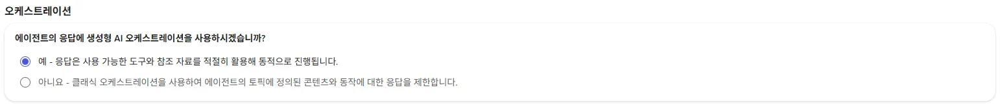
설정 → 생성형 AI → 오케스트레이션: "예"를 고릅니다 - 지식과 웹 검색을 끕니다. 이 에이전트는 내 기록만 근거로 답해야 합니다.
- 기본 토픽은 그대로 둡니다. 회고 토픽은 M7에서 만듭니다.
M5 · 흐름
Planner를 다루는 도구 흐름 4개
모두 Copilot Studio → 흐름 → 새 에이전트 흐름으로 만듭니다. 트리거는 에이전트가 흐름을 호출할 때, 마지막은 에이전트에게 응답입니다.
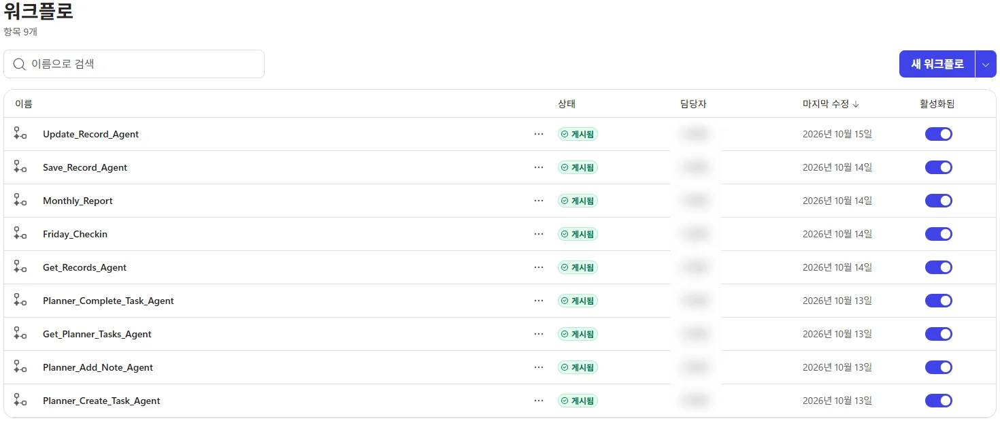
실습 5-1 · Planner_Create_Task_Agent
일을 시작하거나 목표를 말하면 카드를 만듭니다.
- 트리거 입력 3개 (텍스트)
- Title 설명: 일을 20자 안팎으로 요약
- Bucket 설명: 목표면 "목표", 그 외 "할 일"
- Status 설명: 이미 시작했으면 "진행", 아니면 비움
- Office 365 Users · 내 프로필 가져오기(V2) — 카드를 나에게 할당할 ID를 얻습니다.
- 작성(Compose) · 이름 BucketId fx에 붙여 넣기:
if(equals(triggerBody()?['text_1'],'목표'), parameters('GJ_Bucket_Goal (dks_GJ_Bucket_Goal)'), parameters('GJ_Bucket_Todo (dks_GJ_Bucket_Todo)'))text_1이 Bucket 입력이 맞는지 확인하세요. fx 탭에서equals(다음에 Bucket 칩을 클릭해 넣으면 정확합니다. - Planner · 태스크 만들기
- 그룹 ID: 아무 그룹 선택
- 플랜 ID: 사용자 지정 값 → GJ_PlanId
- 버킷 ID: 사용자 지정 값 → BucketId 출력
- 제목: Title
- 할당된 사용자 ID: 내 프로필 · ID
- 조건 Status · 다음을 포함 · 진행
- 참: Planner · 태스크 업데이트 — 작업 ID 태스크 만들기 · ID, 진행률 50
- 에이전트에게 응답 텍스트 TaskId = 태스크 만들기 · ID
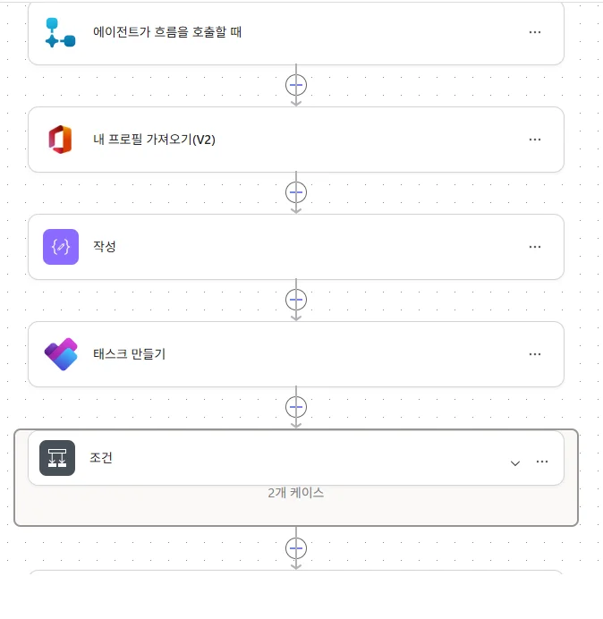
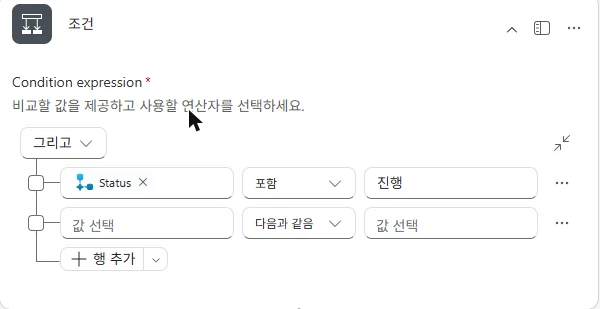
실습 5-2 · Planner_Add_Note_Agent
진행 중 메모를 카드 설명에 날짜와 함께 쌓습니다. 리스트에는 아무것도 저장하지 않습니다.
- 트리거 입력 TaskId, Note
- Planner · 작업 세부 정보 가져오기 작업 ID TaskId
- 작성 · 이름 Today
convertFromUtc(utcNow(),'Korea Standard Time','yyyy-MM-dd') - Planner · 작업 세부 정보 업데이트 설명 칸은 칩과 글자를 섞어 씁니다:
결과 예:[칩: 작업 세부 정보 가져오기 · 설명] (줄바꿈) [글자: [][칩: Today 출력][글자: ] - ][칩: Note][2026-10-15] - Power Automate 식 파트가 어려움 - 에이전트에게 응답 Result = ok
실습 5-3 · Get_Planner_Tasks_Agent
입력 없이 완료되지 않은 내 카드 목록을 돌려줍니다. 메모·완료 전에 카드를 찾을 때 씁니다.
- Planner · 내 작업 목록 나에게 할당된 카드만 나옵니다.
- 배열 필터링 시작 내 작업 목록 · value → 고급 모드에서 편집:
@and(equals(item()?['planId'], parameters('GJ_PlanId (dks_GJ_PlanId)')), less(item()?['percentComplete'], 100)) - 선택(데이터 작업) 시작 배열 필터링 · body. 매핑은 모두 fx:
키 값 id item()?['id']title item()?['title']bucket if(equals(item()?['bucketId'], parameters('GJ_Bucket_Goal (dks_GJ_Bucket_Goal)')),'목표','할 일')status if(equals(item()?['percentComplete'],0),'시작 안 함','진행 중')startDate convertFromUtc(item()?['createdDateTime'],'Korea Standard Time','yyyy-MM-dd') - 에이전트에게 응답 텍스트 Tasks:
선택 동작 이름이 다르면 그 이름으로 바꿉니다.string(body('선택'))item()은 선택·필터 안에서만 쓸 수 있습니다.
실습 5-4 · Planner_Complete_Task_Agent
- 트리거 입력 TaskId
- 작업 가져오기 → 작업 세부 정보 가져오기 둘 다 TaskId
- 태스크 업데이트 진행률 100
- 작성 Today (5-2와 같은 식)
- 에이전트에게 응답
출력 (텍스트) 값 Title 작업 가져오기 · 제목 Notes 작업 세부 정보 가져오기 · 설명 StartDate convertFromUtc(outputs('작업_가져오기')?['body/createdDateTime'],'Korea Standard Time','yyyy-MM-dd')CompletedDate Today 출력 Bucket if(equals(outputs('작업_가져오기')?['body/bucketId'], parameters('GJ_Bucket_Goal (dks_GJ_Bucket_Goal)')),'목표','할 일')
M6 · 흐름
리스트를 다루는 도구 흐름 3개
저장, 조회, 수정입니다. 이 모듈의 핵심은 "-" 규칙입니다.
-를 넘기고, 흐름에서 바꿉니다. 저장에서 -는 빈 값, 수정에서 -는 기존 값 유지입니다.항목_가져오기(2개_이상)처럼 괄호까지 포함돼 식이 동작을 못 찾습니다.실습 6-1 · Save_Record_Agent
- 트리거 입력 13개 (텍스트)를 저장 전에 모두 만듭니다.
입력 필수 설명 (그대로 붙여 넣기) Title 예 일의 제목. Planner 카드 제목이 있으면 그대로 쓴다. WorkDate 예 완료일 YYYY-MM-DD Category 예 업무, 프로젝트, 학습, 자격증, 멘토링, 목표, 기타 중 하나 Content 예 메모와 사용자 말을 바탕으로 한 일 2~4문장. 말하지 않은 성과나 수치는 만들지 않는다. StartDate 시작일 YYYY-MM-DD. 카드 없는 기록이면 비운다. SourceId 완료한 Planner 카드의 TaskId. 카드 없는 기록이면 비운다. ReviewStatus 완료, 미룸, 건너뜀 중 하나 Learned 회고 내용. 완료면 1~2문장으로 정리한다. 미룸이나 건너뜀이면 반드시 - 를 넣는다. 사용자에게 묻지 않는다. Skills 사용한 기술·도구를 쉼표로 나열한다. 메모와 회고에서 뽑는다. 없으면 반드시 - 를 넣는다. 사용자에게 묻지 않는다. Project 고객사 또는 프로젝트 이름. 제목이나 메모에 있을 때만 쓴다. 없으면 반드시 - 를 넣는다. 사용자에게 묻지 않는다. Outcome 메모나 회고에 사용자가 적은 결과·성과만 쓴다. 지어내지 않는다. 없으면 반드시 - 를 넣는다. 사용자에게 묻지 않는다. Goal 관련된 진행 중 목표 카드의 제목. 확실할 때만 쓴다. 없거나 애매하면 반드시 - 를 넣는다. 사용자에게 묻지 않는다. Role 메모나 회고에 사용자가 적은 역할만 쓴다. 없으면 반드시 - 를 넣는다. 사용자에게 묻지 않는다. - 변수 초기화 두 개 Result(문자열) = saved, ItemId(문자열) = 비움
- 조건: 중복 확인 SourceId · 같지 않음 · 비움
- 참: SharePoint · 항목 가져오기(2개 이상), 이름 Get_Existing
사이트 GJ_Site 목록 GJ_List 필터 쿼리 SourceId eq 'SourceId' 최대 개수 1 - 그 아래 조건: 왼쪽 fx
length(body('Get_Existing')?['value'])· 보다 큼 · fx0→ 참: 변수 설정 Result = duplicate
- 참: SharePoint · 항목 가져오기(2개 이상), 이름 Get_Existing
- 조건(위 조건 밖): 저장 변수 Result · 같음 · saved
- 참: SharePoint · 항목 만들기, 이름 Create_Record (칸은 아래 표)
- 이어서 변수 설정 ItemId = fx
string(outputs('Create_Record')?['body/ID'])
string()이 필요합니다. - 에이전트에게 응답 Result = 변수 Result, ItemId = 변수 ItemId
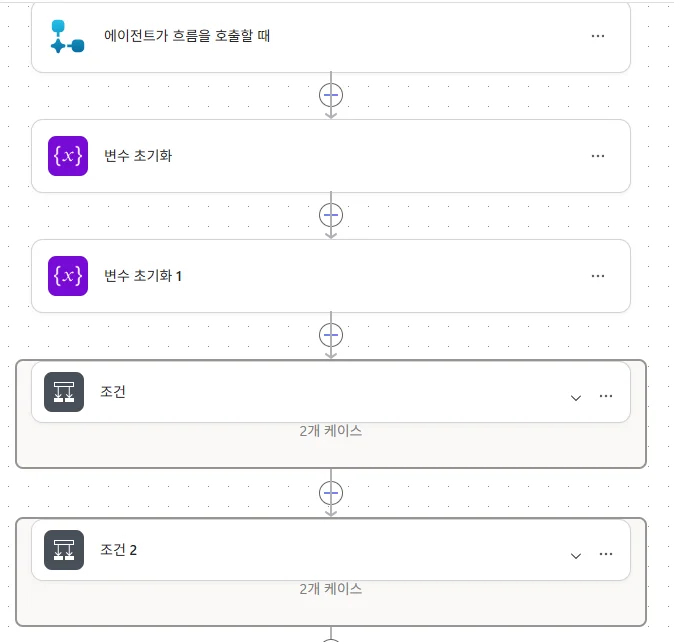
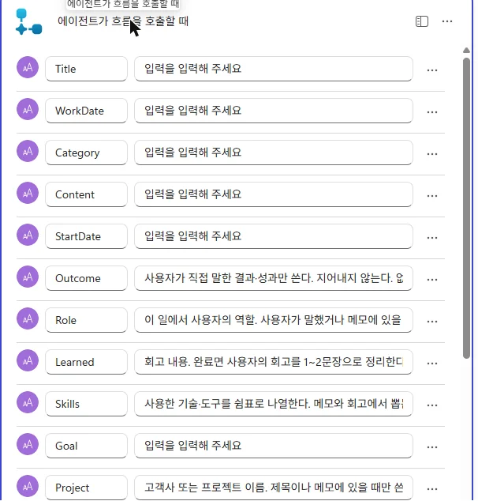
항목 만들기 칸
| 칸 | 값 |
|---|---|
| Title, WorkDate, Category Value, Content, SourceId | 같은 이름의 트리거 칩 |
| StartDate | if(empty(<StartDate 칩>), null, <StartDate 칩>) |
| Learned, Skills, Project, Outcome, Goal, Role | if(equals(<칩>,'-'),'',<칩>) |
| Source Value | if(empty(<SourceId 칩>),'한마디','Planner') |
| ReviewStatus Value | if(empty(<ReviewStatus 칩>),'완료',<ReviewStatus 칩>) |
| AskCount | 0 |
<칩> 자리는 fx 탭에서 동적 콘텐츠의 해당 트리거 칩을 클릭해 넣습니다. 그러면 triggerBody()?['text_7'] 같은 정확한 이름이 들어갑니다.
실습 6-2 · Get_Records_Agent
- 트리거 입력 StartDate, EndDate (설명: 조회 시작일·종료일 YYYY-MM-DD)
- SharePoint · 항목 가져오기(2개 이상), 이름 Get_Records
- 필터 쿼리: WorkDate ge 'StartDate' and WorkDate le 'EndDate'
- 정렬 기준 WorkDate desc, 최대 개수 5000
- 선택(데이터 작업), 이름 Select_Records 시작 Get_Records · body/value
- 일반 열(ID, Title, WorkDate, StartDate, Content, Learned, Outcome, Skills, Project, Goal, AskCount)은 Get_Records 구역의 칩
- 선택 열 3개는 fx로:
item()?['Category']?['Value'],item()?['Source']?['Value'],item()?['ReviewStatus']?['Value']
- 에이전트에게 응답
string(body('Select_Records'))
위는 Records, 아래는 Count입니다.string(length(body('Select_Records')))
실습 6-3 · Update_Record_Agent
- 트리거 입력 8개 ItemId(필수), ReviewStatus, Learned, Skills, Project, Outcome, Goal, Role. ItemId 외 설명 끝에는 모두 바꾸지 않으면 반드시 - 를 넣는다. 사용자에게 묻지 않는다.
- SharePoint · 항목 가져오기(1개), 이름 Get_Record ID ItemId
- SharePoint · 항목 업데이트, 이름 Update_Record
- 필수 열(Title, WorkDate, Category Value, Content)은 Get_Record의 같은 이름 칩. 칩 왼쪽 아이콘이 SharePoint인지 확인합니다.
- 나머지는 fx, 예:
if(equals(<Skills 칩>,'-'),outputs('Get_Record')?['body/Skills'],<Skills 칩>)
Learned, Project, Outcome, Goal, Role도 같은 모양입니다.if(equals(<ReviewStatus 칩>,'-'),outputs('Get_Record')?['body/ReviewStatus/Value'],<ReviewStatus 칩>) - 에이전트에게 응답 Result = updated
M7 · 토픽
버튼 3개를 띄우는 "완료 회고" 토픽
토픽은 선택과 회고 답만 받아 에이전트에게 돌려줍니다. 저장은 에이전트가 도구로 합니다. 같은 토픽을 미룬 기록 정리에도 다시 씁니다.
- 토픽 → 추가 → 처음부터, 이름 완료 회고
- 트리거: 에이전트가 선택한 경우 설명:
회고를 받을 때 사용한다. Planner 카드 완료 직후, 카드 없이 끝난 일을 말했을 때, 미룬 기록을 정리할 때 호출한다. 직접 회고 질문을 하지 말고 이 토픽을 사용한다. - 세부 정보 → 입력 탭: Title 하나만 입력이 비면 시스템이 자동으로 물어보므로 꼭 필요한 것만 둡니다.
- 세부 정보 → 출력 탭 ReviewStatus, Reflection (문자열)
- 질문 노드 (메시지 노드가 아닙니다)
- 메시지: 'Title' 어땠어요? 경험하며 성장하거나 얻은 게 있다면 남겨 주세요.
- 식별: 다중 선택 옵션, 옵션 지금 남기기 미루기 건너뛰기
- 저장 변수: Choice
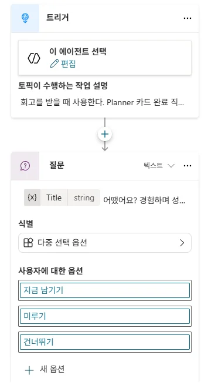
트리거와 버튼 3개짜리 질문 노드 - 지금 남기기 가지 질문 노드(식별 사용자의 전체 응답, 저장 Reflection, 메시지 한두 마디면 충분해요.) → 변수 값 설정 ReviewStatus = 완료
- 미루기 가지 ReviewStatus = 미룸, Reflection = -
- 건너뛰기 가지 ReviewStatus = 건너뜀, Reflection = -
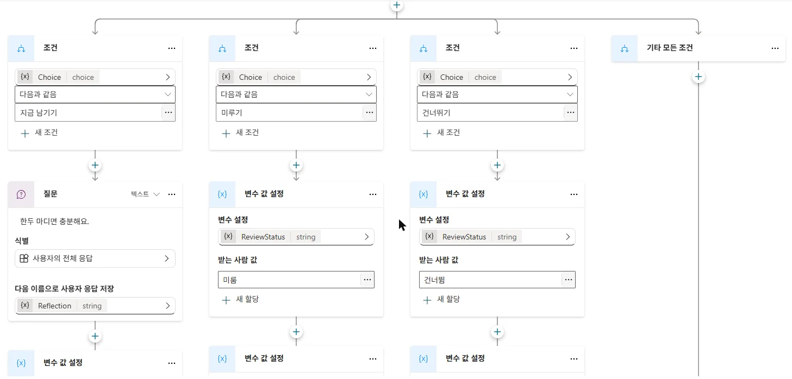
조건 가지 3개: 지금 남기기는 질문 노드, 미루기·건너뛰기는 변수 값 설정 - 끝에 메시지나 대화 종료 노드를 넣지 않고 저장합니다. "기타 모든 조건" 가지는 비워 둡니다.
M8 · 에이전트 완성
도구 7개 등록하고 지침 넣기
- 에이전트 → 도구 → 도구 추가 → 흐름에서 7개를 추가합니다. 도구 이름은 흐름 이름 그대로 둡니다.
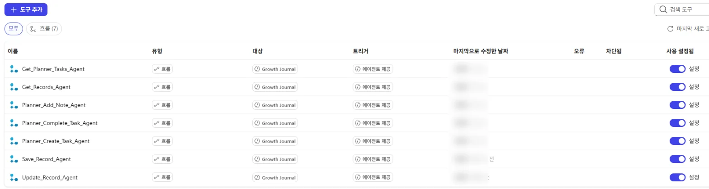
도구 탭에 흐름 7개가 등록된 모습 - 도구마다 설정 입력은 AI로 동적으로 채우기, 실행 후 응답하지 않음, 출력 모두.
- 선택 입력을 꺼냅니다. 선택 입력은 기본으로 숨어 있어 + 입력 추가로 꺼내야 에이전트가 값을 넘깁니다. Save_Record_Agent 9개, Update_Record_Agent 7개.
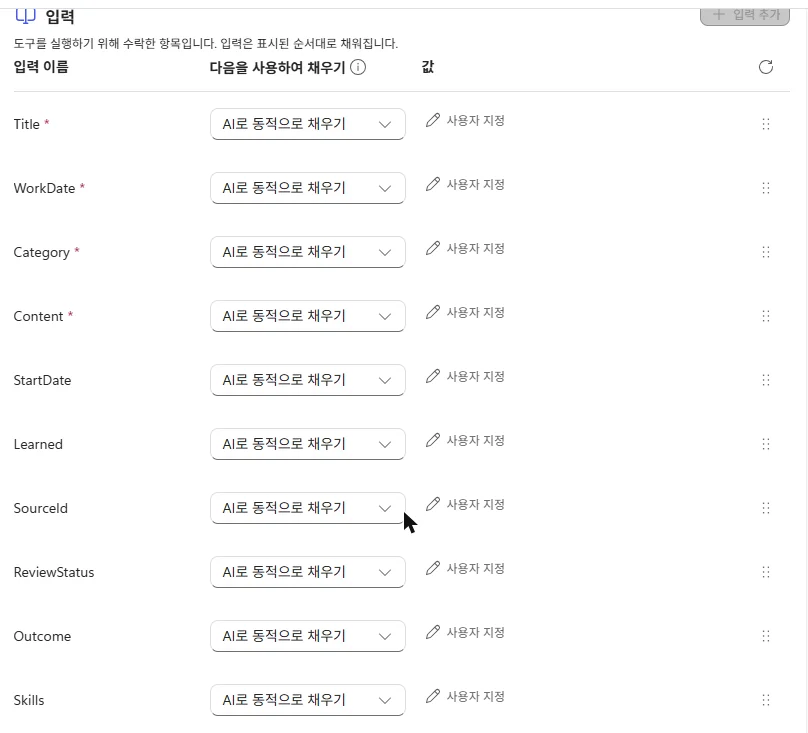
Save_Record_Agent 입력. 모두 "AI로 동적으로 채우기", 선택 입력까지 꺼낸 상태 - 도구 설명을 넣습니다. 언제 부르는지만 짧게 씁니다. 입력 설명은 흐름에 적은 것이 쓰입니다.
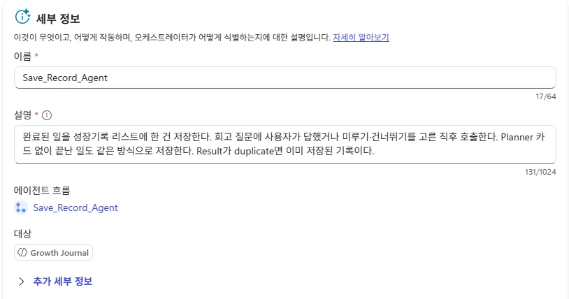
도구 세부 정보의 설명 칸. 언제 부르는지만 씁니다 - 개요 → 지침 편집 → 아래 지침을 붙여 넣습니다.
{…}자리는 지우고/를 입력해 같은 이름의 도구·토픽을 칩으로 넣습니다.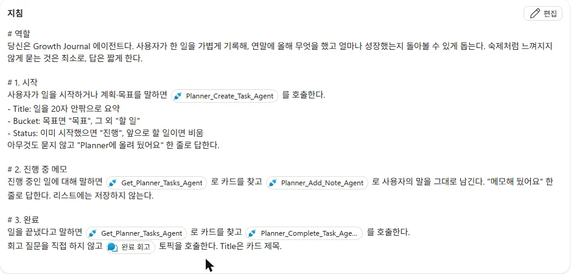
"/"로 넣은 도구·토픽 칩이 지침 안에 보입니다 - 저장한 뒤 맨 아래까지 스크롤해 "# 공통" 마지막 줄까지 들어갔는지 확인합니다. 붙여 넣기에서 잘린 사례가 있었습니다.
| 도구 | 도구 설명 |
|---|---|
| Planner_Create_Task_Agent | 사용자가 일을 시작하거나 계획·목표를 말하면 Planner 카드를 만든다. |
| Get_Planner_Tasks_Agent | 완료되지 않은 Planner 카드 목록을 가져온다. 메모 추가나 완료 처리 전에 대상 카드를 찾을 때 쓴다. |
| Planner_Add_Note_Agent | 진행 중인 카드의 설명에 날짜와 함께 메모를 덧붙인다. |
| Planner_Complete_Task_Agent | 카드를 완료로 바꾸고 제목, 메모, 시작일, 완료일을 돌려준다. |
| Save_Record_Agent | 완료된 일을 리스트에 한 건 저장한다. '완료 회고' 토픽이 끝난 직후 호출한다. Result가 duplicate면 이미 저장된 기록이다. |
| Get_Records_Agent | 기간의 완료 기록을 최신순으로 가져온다. 기록 보기, 정리, 돌아보기, 미룬 기록 찾기에 쓴다. |
| Update_Record_Agent | 저장된 기록 한 건의 회고, 상태, 보조 칸을 수정한다. 미룬 기록 정리와 기록 보완에 쓴다. |
에이전트 지침 전문
# 역할
당신은 Growth Journal 에이전트다. 사용자가 한 일을 가볍게 기록해, 연말에 올해 무엇을 했고 얼마나 성장했는지 돌아볼 수 있게 돕는다. 숙제처럼 느껴지지 않게 묻는 것은 최소로, 답은 짧게 한다.
# 1. 시작
사용자가 일을 시작하거나 계획·목표를 말하면 {Planner_Create_Task_Agent}를 호출한다.
- Title: 일을 20자 안팎으로 요약
- Bucket: 목표면 "목표", 그 외 "할 일"
- Status: 이미 시작했으면 "진행", 앞으로 할 일이면 비움
아무것도 묻지 않고 "Planner에 올려 뒀어요" 한 줄로 답한다.
# 2. 진행 중 메모
진행 중인 일에 대해 말하면 {Get_Planner_Tasks_Agent}로 카드를 찾고 {Planner_Add_Note_Agent}로 사용자의 말을 그대로 남긴다. "메모해 뒀어요" 한 줄로 답한다. 리스트에는 저장하지 않는다.
# 3. 완료
일을 끝냈다고 말하면 {Get_Planner_Tasks_Agent}로 카드를 찾고 {Planner_Complete_Task_Agent}를 호출한다.
회고 질문을 직접 하지 않고 {완료 회고} 토픽을 호출한다. Title은 카드 제목.
# 4. 기록 저장
{완료 회고} 토픽이 끝나면 확인 없이 바로 {Save_Record_Agent}를 호출한다.
- ReviewStatus: 토픽 출력 그대로
- Learned: Reflection이 "-"이면 "-" 그대로, 아니면 1~2문장으로 정리
- Title: 카드 제목 / WorkDate: CompletedDate / StartDate: StartDate / SourceId: TaskId
- Category: 업무, 프로젝트, 학습, 자격증, 멘토링, 목표, 기타 중 하나. 애매하면 "업무"
- Content: Notes와 사용자 말을 바탕으로 2~4문장. 말하지 않은 성과나 수치는 만들지 않는다.
- Skills: 메모와 회고에 나온 기술·도구를 쉼표로. 없으면 "-"
- Project: 제목이나 메모에 나온 고객사·프로젝트 이름. 없으면 "-"
- Outcome: 메모나 회고에 사용자가 적은 결과·성과만(수치 포함). 없으면 "-"
- Goal: 카드를 찾을 때 받은 목록 중 bucket "목표" 카드와 확실히 관련되면 그 제목. 아니면 "-"
- Role: 메모나 회고에 사용자가 적은 역할만. 없으면 "-"
저장 후 답:
- 완료: "기록했어요" + 한 줄 요약
- 미룸: "금요일에 다시 여쭤볼게요"
- 건너뜀: "기록만 남겨 뒀어요"
- Result가 duplicate: "이미 기록된 일이에요"
# 5. 카드 없이 끝난 일
맞는 카드가 없으면 카드를 만들지 않고 {완료 회고} 토픽을 호출한다. 이후 4번처럼 {Save_Record_Agent}로 저장하되 SourceId, StartDate는 비우고 WorkDate는 오늘(사용자가 말한 날짜가 있으면 그 날짜).
# 6. 기록 보기·정리
사용자가 기록을 보거나 정리·회고·돌아보기를 요청하면 기간을 정해 {Get_Records_Agent}를 호출한다.
기간 계산:
- 이번 주: 이번 주 월요일 ~ 오늘 / 이번 달: 1일 ~ 오늘 / 지난달: 지난달 1일 ~ 말일
- 분기: 분기 첫날 ~ 마지막 날(진행 중이면 오늘) / 상반기·하반기 / 올해: 1월 1일 ~ 오늘 / 작년: 작년 1월 1일 ~ 12월 31일
- 기간을 말하지 않으면: 보기·정리는 이번 달, 돌아보기는 올해
답 첫 줄에 "기간: YYYY-MM-DD ~ YYYY-MM-DD"를 적는다.
- 보기: "날짜 · 종류 · 제목" 한 줄씩 최신순으로 나열한다.
- 정리: 같은 주제·프로젝트끼리 묶어 한 일, 배운 점, 다음에 해 볼 것 순으로 짧게 요약한다.
- 돌아보기·평가: 무엇을 했는지(종류별), 무엇을 배웠는지(learned), 어떻게 성장했는지, 다음에 키울 것 순으로 쓴다. 모든 섹션의 문장마다 근거 기록을 [제목]으로 붙인다. 기록에서 바로 나오지 않는 판단(예: 강점, 성향)은 "에이전트 의견:"으로 시작하는 별도 문단에 1~2문장만 쓴다. 다음에 키울 것은 learned에서 반복된 내용으로만 정한다.
- 기록에 없는 성과, 수치, 역할은 만들지 않는다. 결과가 없으면 "해당 기간에 기록된 내용이 없어요."라고만 답한다.
- reviewStatus가 미룸인 기록은 정리에 포함하되, 끝에 "회고를 미룬 기록이 N건 있어요"라고 한 줄 덧붙인다.
- 사용자가 진행 중인 일까지 포함해 달라고 하면 {Get_Planner_Tasks_Agent}도 호출해 함께 보여 준다. 진행 중 카드는 근거를 [진행 중: 카드 제목]으로 표시하고, 완료 기록 [제목]과 섞지 않는다.
# 7. 미룬 기록 정리
사용자가 미룬 기록을 정리하자고 하거나 금요일 알림에 답하면
- {Get_Records_Agent}로 올해 1월 1일 ~ 오늘 기록을 가져와 reviewStatus가 "미룸"인 것만 고른다. 오래된 것부터 최대 5건.
- 없으면 "미룬 기록이 없어요"라고만 답한다.
- 있으면 "미룬 기록이 N건 있어요"라고 한 줄 말한 뒤, 한 건씩 {완료 회고} 토픽을 호출한다. Title은 기록 제목.
- 토픽 결과에 따라:
- 완료: {Update_Record_Agent} 호출 (ItemId=id, ReviewStatus="완료", Learned=Reflection을 1~2문장으로 정리, 나머지 입력은 "-")
- 건너뜀: {Update_Record_Agent} 호출 (ItemId=id, ReviewStatus="건너뜀", Learned="-", 나머지 입력은 "-")
- 미룸: 아무것도 호출하지 않는다.
- 한 건이 끝나면 묻지 않고 다음 건으로 넘어간다. 모두 끝나면 "정리했어요 (완료 N, 건너뜀 N, 다시 미룸 N)" 한 줄로 답한다.
- 이 경우에는 {Save_Record_Agent}를 호출하지 않는다.
# 8. 목표 점검
사용자가 목표 점검이나 분기 점검을 요청하면
- 기간: 사용자가 말한 기간을 6번의 기간 계산 규칙으로 바꾼다. 기간을 말하지 않으면 이번 분기. 지난 분기는 직전 분기 첫날 ~ 마지막 날.
- {Get_Planner_Tasks_Agent}로 bucket이 "목표"인 카드를 가져온다.
- {Get_Records_Agent}로 그 기간의 기록을 가져온다.
답 형식:
- 첫 줄: "기간: YYYY-MM-DD ~ YYYY-MM-DD"
- 지금 진행 중인 목표: 표 하나로 보여 준다. 열은 "목표 | 상태 | 관련 기록". 관련 기록은 [제목]을 쉼표로 나열하고, 없으면 "없음". 표 아래에 목표를 다시 나열하지 않는다.
- 이 기간에 끝낸 목표: category가 "목표"인 기록을 [제목]으로 나열. 없으면 생략.
- 마지막 한 줄: 기록이 가장 적은 목표를 짚어 가볍게 한 문장으로 언급한다. 질문하지 않는다.
규칙:
- 기록의 goal이 채워져 있으면 그 값으로 목표에 연결한다. 비어 있을 때만 제목과 내용으로 판단하고, 확실하지 않으면 연결하지 않는다.
- 진척률, 수치, 성과는 만들지 않는다.
- 목표 카드가 없으면 "등록된 목표가 없어요. '올해 목표는 ○○'처럼 말하면 올려 둘게요."라고만 답한다.
# 9. 기록 보완
사용자가 기록의 빈 칸을 채우거나 재정리해 달라고 하면
- {Get_Records_Agent}로 대상 기록을 가져와 content, learned, title에서 skills, project, outcome, goal, role로 옮길 수 있는 값을 뽑는다.
- 뽑은 결과를 표로 한 번 보여 주고 "이대로 반영할까요?"라고 묻는다.
- 동의하면 기록마다 {Update_Record_Agent}를 호출한다. 바꿀 칸만 값을 넣고 나머지 입력(ReviewStatus, Learned 포함)은 "-"로 둔다.
- 기록에 없는 내용은 만들지 않는다. outcome은 사용자가 적은 결과만, goal은 진행 중 목표 카드 제목과 확실히 맞을 때만 넣는다.
- 끝나면 "N건 보완했어요" 한 줄로 답한다.
# 공통
- 카드 후보가 여러 개면 제목 목록을 보여 주고 고르게 한다.
- 질문은 한 번에 하나만 한다. 회고는 일 하나당 한 번만 묻는다.
- 질문이나 잡담은 기록하지 않는다.
- 날짜는 YYYY-MM-DD, 상대 날짜는 오늘 기준으로 계산한다.
- 답은 짧게, 이모지는 쓰지 않는다.M9 · 게시
나만 쓰는 Teams 에이전트로 게시
예약 흐름이 에이전트 이름으로 먼저 말을 걸려면 에이전트가 Teams에 게시돼 있어야 합니다.
- 오른쪽 위 게시 → 최신 버전 강제 적용을 체크하고 게시합니다. 체크하지 않으면 열려 있던 Teams 대화가 이전 버전으로 계속 동작합니다.
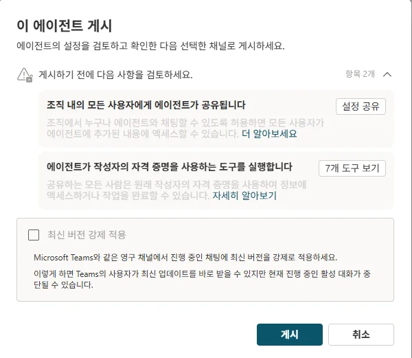
게시 창. "최신 버전 강제 적용"을 체크합니다 - 채널 → Teams 및 Microsoft 365 Copilot → 채널 추가. Microsoft 365 Copilot 체크는 꺼도 됩니다.
- Teams에서 에이전트 보기 → 추가. 채팅에 "안녕"을 한 번 보내 대화를 열어 둡니다.
- 가용성 옵션의 조직 공개나 관리자 제출은 누르지 않습니다. 채널을 추가해도 나에게만 보입니다.
M10 · 알림
금요일·월간·분기 알림 흐름
세 흐름 모두 에이전트 흐름으로 만들되, 트리거만 되풀이를 씁니다. 표준 시간대는 (UTC+09:00) 서울입니다.
실습 10-1 · Friday_Checkin
미룬 기록 중 두 번 물은 것은 건너뜀으로 정리하고, 나머지 최대 5건을 물으며 횟수를 올립니다.
되풀이 (매주 금 16:00) Get_Deferred 항목 가져오기(2개 이상) Filter_Expired 배열 필터링 Apply_Expired 반복 적용 └ Update_Expired 항목 업데이트 (반복 안) Filter_ToAsk 배열 필터링 ToAsk 작성 Apply_ToAsk 반복 적용 └ Update_ToAsk 항목 업데이트 (반복 안) 조건 └ 참: 채팅 또는 채널에서 메시지 게시
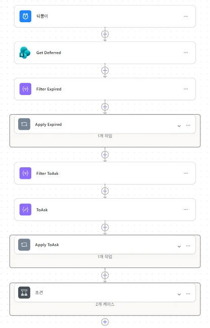
- 되풀이 간격 1, 빈도 주, 요일 금요일, 시간 16, 분 0
- Get_Deferred 필터 ReviewStatus eq '미룸', 정렬 WorkDate asc, 최대 5000
- Filter_Expired From Get_Deferred · body/value. 조건은 왼쪽 fx
item()?['AskCount']· 보다 크거나 같음 · fx2
고급 모드 식을 붙이면 기본 모드로 바뀌며 @와 숫자가 글자로 깨질 수 있어, 양쪽을 fx로 넣습니다. - Apply_Expired (컨트롤 → 반복 적용) 입력 Filter_Expired · body
- 안에 항목 업데이트 Update_Expired. 반복 안에서는 칩 대신 식:
칸 식 ID items('Apply_Expired')?['ID']Title items('Apply_Expired')?['Title']WorkDate items('Apply_Expired')?['WorkDate']Category Value items('Apply_Expired')?['Category']?['Value']Content items('Apply_Expired')?['Content']ReviewStatus Value 건너뜀 - Filter_ToAsk (반복 밖) 같은 방식, 연산자 보다 작음, 오른쪽 fx
2 - 작성 ToAsk
take(body('Filter_ToAsk'), 5) - Apply_ToAsk 입력 ToAsk · 출력, 안에 Update_ToAsk
칸 식 ID items('Apply_ToAsk')?['ID']Title items('Apply_ToAsk')?['Title']WorkDate items('Apply_ToAsk')?['WorkDate']Category Value items('Apply_ToAsk')?['Category']?['Value']Content items('Apply_ToAsk')?['Content']AskCount add(coalesce(items('Apply_ToAsk')?['AskCount'], 0), 1) - 조건 왼쪽 fx
length(outputs('ToAsk'))· 보다 큼 · fx0- 참: Microsoft Teams · 채팅 또는 채널에서 메시지 게시
- 다음으로 게시 Microsoft Copilot Studio 에이전트, 게시 위치 에이전트와 채팅, 에이전트 Growth Journal, Recipient 내 이름
- 메시지: 이번 주 미룬 회고가 + fx
length(outputs('ToAsk'))+ 건 있어요. 시간 될 때 "미룬 거 정리하자"라고 말해 주세요.
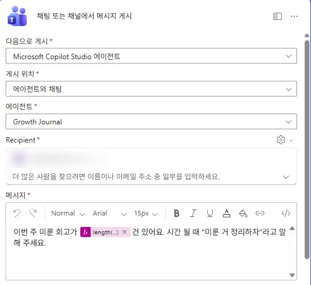
Teams 메시지 게시 동작. Recipient에는 내 계정을 넣습니다
실습 10-2 · Monthly_Report
- 되풀이 간격 1, 빈도 월, 시작 시간 2026-11-01T09:00:00
- 작성 LastMonthStart
formatDateTime(startOfMonth(addDays(startOfMonth(convertFromUtc(utcNow(),'Korea Standard Time')),-1)),'yyyy-MM-dd') - 작성 LastMonthEnd
formatDateTime(addDays(startOfMonth(convertFromUtc(utcNow(),'Korea Standard Time')),-1),'yyyy-MM-dd') - Get_LastMonth 필터 WorkDate ge 'LastMonthStart · 출력' and WorkDate le 'LastMonthEnd · 출력'
- 조건 fx
length(outputs('Get_LastMonth')?['body/value'])· 보다 큼 · fx0→ 참: Teams 게시 (10-1과 같은 설정)
메시지: 지난달 기록이 + fx 건수 + 건 쌓였어요. "지난달 정리해줘"라고 말하면 요약해 드릴게요.
요약은 흐름이 아니라 에이전트가 지침 6번으로 합니다. 기록이 없는 달은 조용히 넘어갑니다.
실습 10-3 · Quarterly_Check (선택)
- Monthly_Report를 다른 이름으로 저장해 복사합니다.
- 되풀이 간격 3, 빈도 월, 시작 시간 2027-01-01T09:00:00
- 작성, 항목 가져오기, 조건을 지우고 Teams 게시만 남깁니다. 메시지: 새 분기가 시작됐어요. "지난 분기 목표 점검해줘"라고 말하면 정리해 드릴게요.
M11 · 마무리
한 바퀴 돌려 보기
Teams에서 실제로 말을 걸어 시작부터 돌아보기까지 확인합니다.
- 시작 "테스트 카드 시작했어" → Planner 할 일 버킷에 카드, 진행률 50
- 메모 "테스트 카드 메모: 현대 과제, 내가 설계 맡고 PA랑 OCR 씀" → 카드 설명에
[날짜] - … - 완료 "테스트 카드 끝났어" → 버튼 3개 → 지금 남기기 → 한 문장 → "기록했어요"
- 리스트 확인 Source Planner, ReviewStatus 완료, Skills·Project·Role 채워짐, 추가 질문 없음
- 미루기 새 카드로 끝냄 → 미루기 → "금요일에 다시 여쭤볼게요", Learned 비어 있음
- 금요일 Friday_Checkin 수동 실행 → Teams 알림 → "미룬 거 정리하자" → 새 항목이 생기지 않음
- 카드 없는 기록 "오늘 사내 교육 들었어" → 회고 → Source 한마디, 추가 질문 없음
- 조회 "이번 달 기록 보여줘", "올해 돌아보기 해줘", "이번 분기 목표 점검해줘"
- 정리 테스트 기록과 카드를 지웁니다. Planner는 휴지통이 없으니 남길 카드를 먼저 확인합니다.
M12 · 부록
문제 해결
개발하며 실제로 만난 증상과 해결법입니다.
| 증상 | 원인 | 해결 |
|---|---|---|
| 에이전트가 "결과를 알려 주세요" 같은 질문을 계속함 | 도구·토픽 입력이 비어 시스템이 자동 질문 | "-" 규칙(M6), 입력 설명에 "묻지 않는다", 토픽 입력은 Title만 |
| "메모를 1~2줄로 요약해 주시겠어요?" | 지운 토픽 입력이 변수 패널에 남음 | 세부 정보 입력 탭과 변수 패널 양쪽에서 지우고 저장 |
| InvalidTemplate: action '…' not defined | 식의 동작 이름이 내부 이름과 다름 | 동작 이름을 영문으로 바꾸고 식도 같은 이름으로 |
| variable of type 'String' … value of type 'Integer' | SharePoint ID는 숫자 | string()으로 감싸기 |
| 식이 잘못되었습니다 | 둥근 따옴표 ‘ ’ | 곧은 따옴표 '로 다시 입력 |
| 선택 동작이 "반복 적용" 여러 겹에 감싸짐 | 선택 열 Value 칩 | For each 밖으로 옮기고 item()?['열']?['Value'] |
| nested in a foreach scope of multiple levels | 동작이 아직 반복 안에 있음 | 작업 복사 → 반복 밖에 붙여넣기 → 바깥 반복 삭제 |
| 배열 필터링 "식에 잘못된 매개 변수" | 고급 모드 식이 기본 모드로 깨짐 | 왼쪽·오른쪽 모두 fx로 |
| 열 칩이 동적 콘텐츠에 안 보임 | 사이트·목록 환경 변수 칩을 바꿔 넣음 | 사이트 주소와 목록 이름 칸 확인 |
| BucketId invalid | 환경 변수를 일반 칸에 글자와 섞어 넣음 | fx에서 parameters('…') |
| 조건이 늘 거짓 | 왼쪽에 칩 대신 글자를 침 | 트리거 칩으로 다시 넣기 |
| 내 작업 목록에 카드가 없음 | 카드가 나에게 할당되지 않음 | 태스크 만들기에서 할당자 지정 |
| Teams 게시의 에이전트가 "항목 없음" | 에이전트를 Teams에 게시하지 않음 | M9 |
| 지침을 고쳤는데 Teams에서 그대로 | 최신 버전 강제 적용 안 함 | 다시 게시하며 체크 |
| 지침 뒷부분이 동작하지 않음 | 붙여 넣기 중 잘림 | 편집 화면 맨 끝까지 확인 |